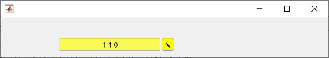
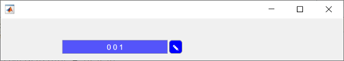

Develop Custom UI Components Programmatically
To create custom UIs and visualizations, you can combine multiple graphics and UI objects, change their properties, or call additional functions. In R2020a and earlier releases, a common way to store your customization code and share it with others is to write a script or a function.
Starting in R2020b, instead of a script or function, you can create a class
implementation for your UI components by defining a subclass of the
ComponentContainer base class. Creating a class has these benefits:
Easy customization — When users want to customize an aspect of your UI component, they can set a property rather than having to modify and rerun your code. Users can modify properties at the command line or inspect them in the Property Inspector.
Encapsulation — Organizing your code in this way allows you to hide implementation details from your users. You implement methods that perform calculations and manage the underlying graphics objects.
This topic gives an overview of the steps to create a custom UI component by defining a class programmatically. Alternatively, starting in R2022a, you can create a custom UI component interactively using App Designer. For more information about the interactive approach, see Create a Simple Custom UI Component in App Designer.
Structure of a UI Component Class
A UI component class has several required parts, and several more that are optional.
In the first line of a UI component class, specify the matlab.ui.componentcontainer.ComponentContainer class as the
superclass. For example, the first line of a class called
ColorSelector looks like
this:
classdef ColorSelector < matlab.ui.componentcontainer.ComponentContainerIn addition to specifying the superclass, include the following components in your class definition. Some components are required, while other components are either recommended or optional.
| Component | Description |
|---|---|
Public property block | This block defines all the properties that users have access to. Together, these properties make up the user interface of your UI component. |
Private property block | This block defines the underlying graphics objects and other implementation details that users cannot access. In this block, set these attribute values:
|
Events block | This block defines the events that this UI component will trigger. In this block, set these attribute values:
When you set the
|
| This method sets the initial state of the UI component. It executes once when MATLAB constructs the object. Define this
method in a protected |
| This method updates the underlying objects in your UI component. It executes under the following conditions:
Define this method in the same protected block as
the |
Constructor Method
You do not have to write a constructor method for your class, because it inherits
one from the ComponentContainer base class. The inherited
constructor accepts optional input arguments: a parent container and any number of
name-value pair arguments for setting properties on the UI component. For example,
if you define a class called ColorSelector that has the public
properties Value and ValueChangedFcn, you can
create an instance of your class using this
code:
f = uifigure; c = ColorSelector(f,'Value',[1 1 0],'ValueChangedFcn',@(o,e)disp('Changed'))
If you want to provide a constructor that has a different syntax or different behavior, you can define a custom constructor method. For an example of a custom constructor, see Write Constructors for Chart Classes.
Public and Private Property Blocks
Divide your class properties between at least two blocks:
A public block for storing the components of the user-facing interface
A private block for storing the implementation details that you want to hide
The properties that go in the public block store the input values provided by the user. For example, a UI component that allows a user to pick a color value might store the color value in a public property. Since the property name-value pair arguments are optional inputs to the implicit constructor method, the recommended approach is to initialize the public properties to default values.
The properties that go in the private block store the underlying graphics objects
that make up your UI component, in addition to any calculated values that you want
to store. Eventually, your class will use the data in the public properties to
configure the underlying objects. Set the Transient and
NonCopyable attributes for the private block to avoid storing
redundant information if the user copies or saves an instance of the UI
component.
For example, here are the property blocks for a UI component that allows a user to pick a color value. The public property block stores the value that the user can control: the color value. The private property block stores the grid layout manager, button, and edit field objects.
properties Value {validateattributes(Value, ... {'double'},{'<=',1,'>=',0,'size',[1 3]})} = [1 0 0]; end properties (Access = private,Transient,NonCopyable) Grid matlab.ui.container.GridLayout Button matlab.ui.control.Button EditField matlab.ui.control.EditField end
Event Block
You optionally can add a third block for events that the UI component fires.
Create a public property for each event in the block by specifying the
HasCallbackProperty attribute. The public property stores the
user-provided callback to execute when the event fires. The name of the public
property is the name of the event appended with the letters Fcn.
For example, a UI component that allows a user to pick a color value might define
the event ValueChanged, which generates the corresponding public
property ValueChangedFcn. Use the notify
method to fire the event and execute the callback in the property.
For example, here is the event block for a UI component that allows a user to pick a color value.
events (HasCallbackProperty, NotifyAccess = protected) ValueChanged end
notify method to fire the
ValueChanged event and execute the callback in the
ValueChangedFcn
property.function getColorFromUser(comp) c = uisetcolor(comp.Value); if (isscalar(c) && (c == 0)) return; end % Update the Value property oldValue = comp.Value; comp.Value = c; % Execute user callbacks and listeners notify(comp,'ValueChanged'); end
f = uifigure; c = ColorSelector(f,'ValueChangedFcn',@(o,e)disp('Changed'))
Setup Method
Define a setup
method for your class. A setup method executes once when
MATLAB constructs the UI component object. Any property values passed as
name-value arguments to the constructor method are assigned after this method
executes.
Use the setup method to:
Create graphics and UI objects that make up the component.
Store the objects as private properties on the component object.
Lay out and configure the objects.
Wire up the objects to do something useful within the component.
Define the setup method in a protected block.
Most UI object creation functions have an optional input argument for specifying the parent. When you call these functions from within a class method, you must specify the target parent. Specify the target parent as the UI component object being set up by using the class instance argument passed to the method.
For example, consider a UI component that has these properties:
One public property called
ValueThree private properties called
Grid,Button, andEditField
The setup method calls the
uigridlayout, uieditfield, and
uibutton functions to create the underlying graphics object
for each private property, specifying the instance of the UI component
(comp) as the target parent.
function setup(comp) % Create grid layout to manage building blocks comp.Grid = uigridlayout(comp,[1 2],'ColumnWidth',{'1x',22},... 'RowHeight',{'fit'},'ColumnSpacing',2,'Padding',2); % Create edit field for entering color value comp.EditField = uieditfield(comp.Grid,'Editable',false,... 'HorizontalAlignment','center'); % Create button to confirm color change comp.Button = uibutton(comp.Grid,'Text',char(9998), ... 'ButtonPushedFcn',@(o,e) comp.getColorFromUser()); end
Update Method
Define an update
method for your class. This method executes when your UI component object needs to
change its appearance in response to a change in values.
Use the update method to reconfigure the underlying graphics
objects in your UI component based on the new values of the properties. Typically,
this method does not determine which of the properties changed. It reconfigures all
aspects of the underlying graphics objects that depend on the properties.
For example, consider a UI component that has these properties:
One public property called
ValueThree private properties called
Grid,Button, andEditField
The update method updates the
BackgroundColor of the EditField and
Button objects with the color stored in
Value. The update method also updates
the EditField object with a numeric representation of the color.
This way, however Value is changed, the change becomes equally
visible
everywhere.
function update(comp) % Update edit field and button colors set([comp.EditField comp.Button],'BackgroundColor',comp.Value, ... 'FontColor',comp.getContrastingColor(comp.Value)); % Update edit field display text comp.EditField.Value = num2str(comp.Value,'%0.2g '); end
There might be a delay between changing property values and seeing the results of
those changes. The update method runs for the first time after the
setup method runs and then it runs every time drawnow executes. The
drawnow function automatically executes periodically, based
on the state of the graphics environment in the user's MATLAB session. This periodic execution can lead to the potential
delay.
Example: Color Selector UI Component
This example shows how to create a UI component for selecting a color, using the
code discussed in other sections of this page. Create a class definition file named
ColorSelectorComponent.m in a folder that is on the
MATLAB path. Define the class by following these steps.
| Step | Implementation |
|---|---|
Derive from the |
classdef ColorSelector < matlab.ui.componentcontainer.ComponentContainer |
Define public properties. |
properties Value {validateattributes(Value, ... {'double'},{'<=',1,'>=',0,'size',[1 3]})} = [1 0 0]; end |
Define public events. |
events (HasCallbackProperty, NotifyAccess = protected) ValueChanged % ValueChangedFcn will be the generated callback property end |
Define private properties. |
properties (Access = private, Transient, NonCopyable) Grid matlab.ui.container.GridLayout Button matlab.ui.control.Button EditField matlab.ui.control.EditField end |
Implement the Specify the
|
methods (Access = protected) function setup(comp) % Grid layout to manage building blocks comp.Grid = uigridlayout(comp,[1,2],'ColumnWidth',{'1x',22}, ... 'RowHeight',{'fit'},'ColumnSpacing',2,'Padding',2); % Edit field for value display and button to launch uisetcolor comp.EditField = uieditfield(comp.Grid,'Editable',false, ... 'HorizontalAlignment','center'); comp.Button = uibutton(comp.Grid,'Text',char(9998), ... 'ButtonPushedFcn',@(o,e) comp.getColorFromUser()); end |
Implement the |
function update(comp) % Update edit field and button colors set([comp.EditField comp.Button],'BackgroundColor',comp.Value, ... 'FontColor',comp.getContrastingColor(comp.Value)); % Update the display text comp.EditField.Value = num2str(comp.Value,'%0.2g '); end end |
Wire the callbacks and other pieces together using private methods. When the
When the
|
methods (Access = private)
function getColorFromUser(comp)
c = uisetcolor(comp.Value);
if (isscalar(c) && (c == 0))
return;
end
% Update the Value property
comp.Value = c;
% Execute user callbacks and listeners
notify(comp,'ValueChanged');
end
function contrastColor = getContrastingColor(~,color)
% Calculate opposite color
c = color * 255;
contrastColor = [1 1 1];
if (c(1)*.299 + c(2)*.587 + c(3)*.114) > 186
contrastColor = [0 0 0];
end
end
end
end |
Next, create an instance of the UI component by calling the implicit constructor
method with a few of the public properties. Specify a callback to display the words
Color changed when the color value changes.
h = ColorSelector('Value', [1 1 0]); h.ValueChangedFcn = @(o,e) disp('Color changed');

Click the button and select a color using the color picker. The component changes
appearance and MATLAB displays the words Color changed in the Command
Window.
